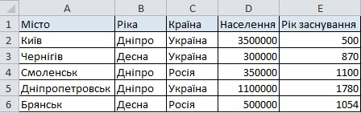

Завдання 1
За таблицею з інформацією про працівників підприємства, яка наведена на рис. 5.3 визначте кількість працівників, які мають оклад понад 4000 грн або для яких виконуються такі дві умови: дата народження після 1 січня 1982 року і оклад понад 3000 грн.
Завдання 2
Доповніть твердження так, щоб вони стосувалися зображеної на рис. 5.65 таблиці.
- Для обчислення проміжних підсумків таблицю доцільно сортувати за стовпцями ___________ або ___________.
- Для значень стовпця ___________ можна обчислити такі підсумкові характеристики, як ___________та ___________, а для значень стовпця ___________ - такі, як ___________та ___________.

Рис. 5.65. Таблиця з відомостями про міста
Завдання 3
Визначте, які узагальнюючі операції можна виконати над даними кожного зі стовпців зображеної на рис. 5.66 таблиці.
Рис. 5.66. Таблиця з відомостями про електронні прилади
Завдання 4
Вкажіть, які поля в які області макета зведеної таблиці слід перетягнути, щоб для кожного типу авто обчислити максимальний об'єм двигуна та середню вартість, а також щоб забезпечити можливість врахування під час обчислень лише автомобілів певної марки. Вихідні дані наведено в таблиці на рис. 5.67.
Рис. 5.67. Таблиця з відомостями про марки автомобілів
Завдання 5
Сформулюйте умови, які відповідають критеріям вибору працівників, вказаним на рис. 5.68. За якими із цих критеріїв не буде знайдено жодного прізвища працівника незалежно від вмісту таблиці?
Рис. 5.68. Критерії вибору працівників